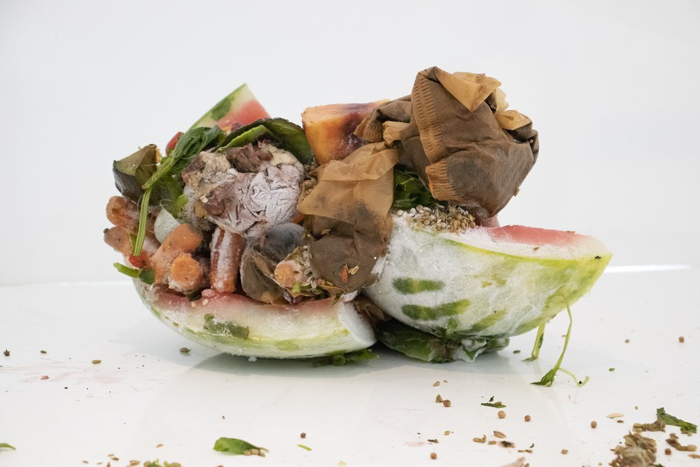
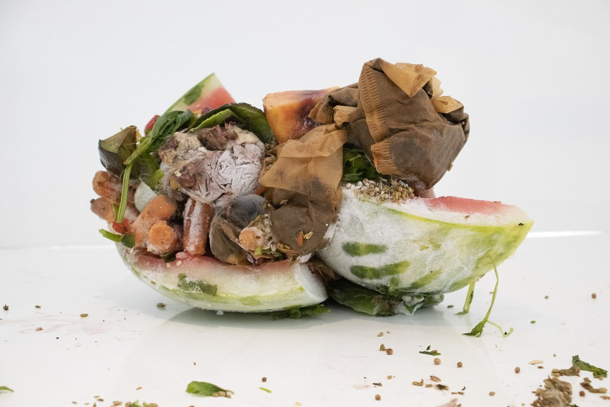

Marion Wilson’s art investigates ecology and landscape to foster a closer connection to self and place. Through paintings, photographs and installations she interrogates our relations to nature at a time when extreme climate change threatens ecosystems, livelihoods, and communities. As a Professor and in her social practice projects Wilson builds collaborative partnerships with botanists, architects, and mostly urban communities by accessing individual expertise and working non-hierarchically. As an Associate Professor at Syracuse University from 2007-17 Marion Wilson institutionalized an art curriculum called New Directions in Social Sculpture as a result of her belief in the revitalization of urban spaces through the arts. She used recycled materials and unlikely collaborations to revitalize urban spaces through the arts. Wilson is the founder of MLAB and the Mobile Field Station (a mobile eco/art lab in a collaboratively renovated RV) and 601 Tully—the renovation of an abandoned 1900 square ft residence that had become a drug house into a neighborhood art museum on the westside of Syracuse, NY. Wilson holds a BA from Wesleyan University; an M.A. from Columbia University and an M.F.A. from University of Cincinnati. Her individual studio work uses artifacts of the photography industry in sculpture, painting and printed photographs to explore industrialized landscapes and useful and stress tolerant botanies with a special interest in moss. Wilson has exhibited with New Museum of Contemporary Art, NYC; Frederieke Taylor, NYC, Herbert Johnson Museum at Cornell University, Kasia Kay Art Projects, New Orleans; Dorsky Gallery, NYC; Shroeder Romero Gallery, Exit Art, Cheryl Pelavin Fine Arts and Sculpture Center, NYC; in addition to Hallwalls Contemporary Arts Center, Buffalo, NY; SPACES, Cleveland Ohio; and SCOPE Miami/Art Basel, Miami, Florida. Wilson has been awarded funded residencies at Millay Colony for the Arts (Nancy Graves Award); International Studio Program (NYSCA and Elizabeth Foundation), Sculpture Space in Utica, NY and most recently McColl Center for Art and Innovation in Charlotte, North Carolina. Wilson is currently a lead artist for Mural Arts, Restored Spaces working in North Philly with William Cramp Elementary School on a project called Uprooted/re-Rooted. Compost/Composed, 2020-2021 For six months Wilson collected and sculpted her compost in her small NYC apartment. During a funded international artist residency at Light Work/Community Darkrooms she photographed these composted forms onto thick rag paper and painted and stained them with coffee, and other home-made food dyes.